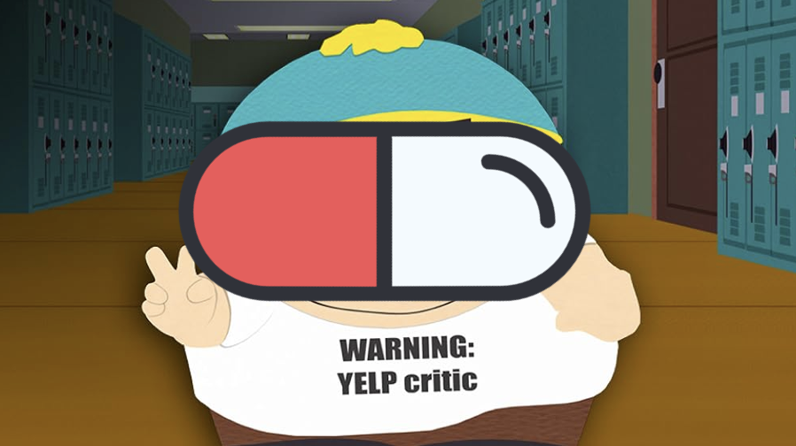
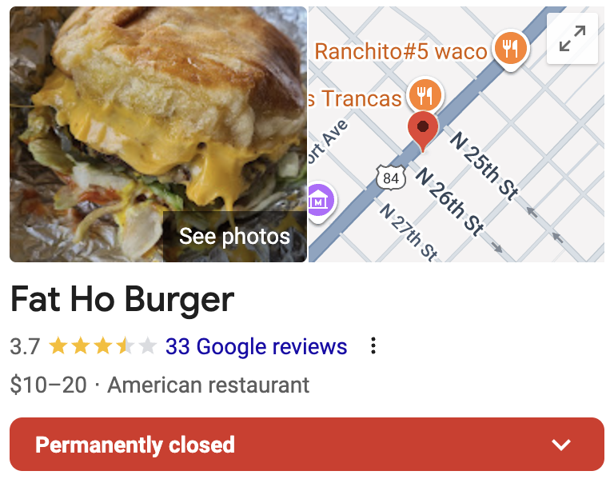

Ask not what the business can do for you, but what you can do for the business and your fellow consumers.
Google is where the reputations of businesses are both made and broken. A poor Google score or review is enough to turn consumers away without a second thought. Businesses understand this and do whatever they can to earn the precious five stars from each customer: pressuring you in person or via email to submit a review, creating QR codes to make it easier to review, giving you a free item, the list of both ingenuity and shadiness (and sometimes both!) goes on. Businesses' response to a poor review can help them look good to potential customers or confirm the review's accusations.
In a world with no reviews, consumers go into everything blind. They have no clue what to actually expect, only what the business has hyped up on their website. The businesses are also blind. They operate in a feedback loop that is difficult to get information.

The power ultimately lies in the consumer's hands, just like South Park's Cartman thinks. And with great power comes great responsibility.
(The rest of this essay assumes the reviewer is a reasonable, charitable, and kind person.)
Leaving as many honest, descriptive reviews as possible provides information for both the business and other potential customers to make decisions off of. Businesses can take the feedback and improve off of it, guarding against another potential review having the same piece of not-positive feedback. Customers can decide to not eat there, sending a silent signal to the business that they're doing something wrong. But what? Is it the prices? The dirty bathrooms? The fact that they require your phone number and spam you even though they literally call out your order number? How does the business know what exactly they're doing wrong?
The reviews! The businesses have to have feedback, preferably in the form of reviews, to know and improve on what they did wrong, and the only party that can give them that is the consumer.
Other businesses can also learn from reviews, both directly and via negativa. Business A can look at reviews of business B to figure out what they're doing wrong and fix it before it comes to bite them.
In the end, everyone is better off for it. Customers get better businesses and businesses get more customers because they're now better businesses. The cycle repeats itself until we're all eating a three-star Michelin restaurants and experiencing top-notch service at all bicycle shops.
I'm still slightly undecided on how to rate businesses. Do you rate them relative to others in their class (e.g., steakhouse vs. steakhouse, but not steakhouse vs. taco joint)? Do you aim to form a bell curve? Are they actually normally distributed? Is five stars the default, with anything less than the expected level of service or quality of product resulting in stars being removed?
In the end, I think you have to rate on an absolute scale (which should roughly turn into a bell curve, although maybe not entirely centered). The New York Times food reviewer Pete Wells has a nice system that helps him rate the restaurants he visited:
But that's just food. What about for all businesses, like a bicycle shop or hair salon or law office? I choose a weighted factor approach of:

These weights may vary person-to-person, but I'd argue not by much. If they do, the priorities are probably wrong.
How a review is structured matters because you get about five words. The important points should be up front with the minor points at the end.
Excellent experiences that are worthy of four or five stars should start positive in order to reinforce what the business is doing well and serve as a quick snippet for why others should come here. Any minor negative points should be at the end.
Here are two examples of five-star reviews for NMP Cafe, one high-quaity and one low-quality:
Poor experiences should start negative in order to directly explain what the business is doing poorly and serve as a quick snippet for why others should not come here. Positive points should come after.
Here are two examples of two-star reviews for NMP Burgers, one high-quaity and one low-quality:
All this said, leaving an X-star-only rating with no text is still better than nothing because it's some information. The owner may even be able to tie it back to the reviewer and learn from it.
In-person, so effectively private, reviews should become more normalized. (These are in addition to online, public reviews.)
Opening up a real-time dialogue line between the customer and business rep allows for more effective communication to be had through answering questions, clarifications, etc. And there shouldn't be any awkwardness! The customer is essentially giving the rep a chance to do better and make even more money from happier future customers!
My approach in the few times I've done this is to politely ask for a manager, start with a simple "hey, I'd like to give you some polite feedback on X" (and maybe make it clear I'm not looking for a free anything), then kindly explain my position. They've always been outwardly receptive and appreciative of the chance to listen and talk. Experiences may vary.
Do it for your family, friends, and neighbors. Do it for the business owners that want to do better. Do it for the guy who was gonna experience a nasty meal, but because of your review—yes, your review—didn't. Do it for the business owners who are constantly asking for feedback on their product and the experience because they're struggling, but never get anything. Do it for the chance to become an influencer or food critic. Do it for the clout. Do it for your future self.